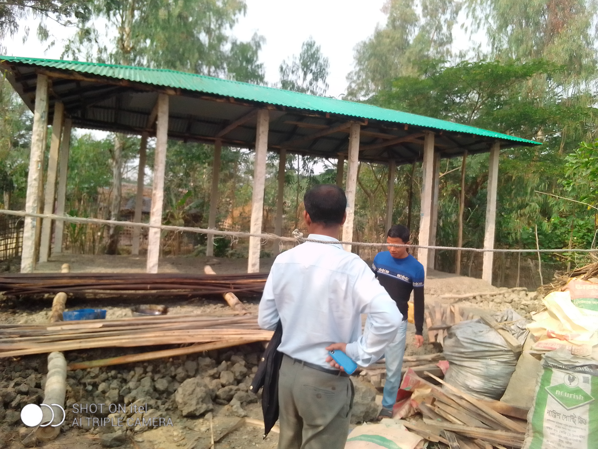
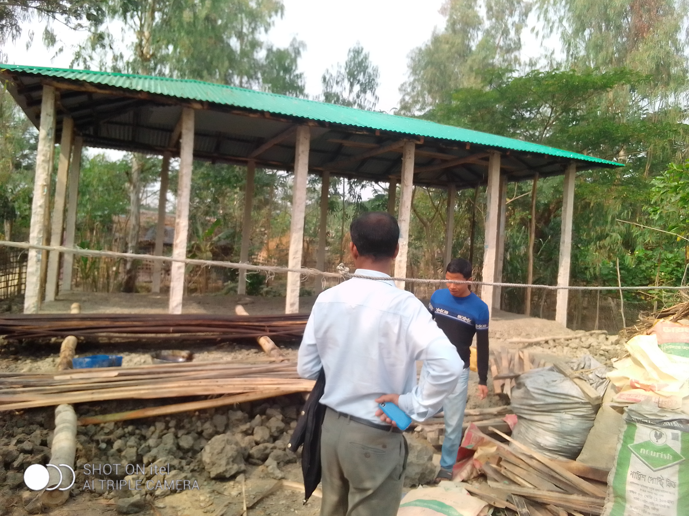

A Success Story Of FCCP Project's Beneficiary
 

"Delwara fulfilled her latent desire to build a strong house with the help of the FCCP Project"
At the present time, in addition to increase in natural disaster, the poorest families in extreme danger are also being crushed in the dustbin of extreme poverty due to structural and economic losses. Extremely vulnerable families are struggling to overcome it. Delwara Begum is a widow living in the Bay of Bengal. Delwara has long dreamed of building a disaster-tolerant house. Then Caritas Bangladesh's "Cyclone Preparedness at the Family and Community Level" Project give her the opportunity to fulfill that latent desire. This project has been in regular operation since 2019. Through participating in disaster awareness meetings including cluster meeting continue to develop skills in preparedness for cyclone and various natural disaster risk reduction. As well as focusing on self-determination in disaster risk reduction in the beginning by adopting short term and long terms plans keeps important documents in a safe place at home, made of loft, use a loose stove and continue to do important work including dragging the house and as well as trying to increase the income of the family.
Among the areas affected by various natural disasters due to location Banshkhali is one of the Upazilas. Karimjan Para of Balukhali village of Chuto Salua Mouza and Delwara Begum works as day laborer in this neighborhood. Delwara Begum is 35 years old, her husband name is late Medina, two sons named Tareq Hossain and Sayed Hossain & two daughters named Miftahul Jannat & Fatematuz Jahura. Her total family members is five. The property of the family is a homestead and poultry. Like everyone in the village, her family has been affected by natural disaster many times. Having houses on the seashore caused extensive damage after the previous cyclones Ruano & Mura. Then the house was repaired bamboo fence & straw But Delwara to spend the day in panic during rainy & cyclone season. In a word of scarcity, she falls into thought how her weakly damaged house will be disaster tolerant and will be make it stronger. Husband's daily wage income was running all the expenses of her family but last October 06, 2019 her husband died of an incurable disease called Cancer. As a result, in the death of the sole earner, darkness descends on their family. The hope of building a disaster tolerant strong home is weak ended by meeting other family expenses.
Caritas Bangladesh follows the beneficiary's selection policy as the poorest family in the area and technical and financial assistance programs for disaster-tolerant low cost housing for the most vulnerable families supported by the FCCP project. Under this programs last October 15, 2021 started training on disaster resilient low cost housing and after providing training in December 02 & December 27, 2021 Delwara received financial assistance of Taka 75,000 in two steps. With the help of the project, poor families in the area's working person those who are involved in carpentry and masonry work, skill enhancement training is provided for them through Caritas Bangladesh Chattogram Regional Office dated on 08 to 10 December, 2019 and again 06 to 08 October, 2020 they have received follow-up training regarding disaster friendly low cost housing. The main content of the training was need to use quality equipment for disaster resilient housing and the various strategies for building disaster resilient housing. With the help of Rabi Alam, a carpenter who has gained skill from the training received, Delwara spent a total of 1, 35,000 Taka on some more loans including the grant money and builds a house strong enough to withstand disaster.
Expressing her attitude Delwara said, if we extend a helping hand to poor families, they too can turn around and can implement disaster risk reduction action plan. She said," let us prepare before the disaster to reduce the damage during the disaster" through this project of Caritas Bangladesh in our poor affected areas disaster risk reduction started an unprecedented development journey & the standard of living of me and the people of my village has improved. For this I am grateful to Caritas Bangladesh.
Also aimed to raising awareness of neighbors on the same subject to ensure the participation of all in disaster risk reduction activities, cluster meetings of all project activities at the neighborhood level increase public awareness about disaster risk at rallies and meetings active participation, it continues to inspire others too. People also extending a helping hand to others on various issues whenever gets a chance. Currently the FCCP Project's learning can be cited as an example. Delwara is a very well-known name in the area today. Following her footsteps, many in the neighborhood have begun building disaster-tolerant homes.